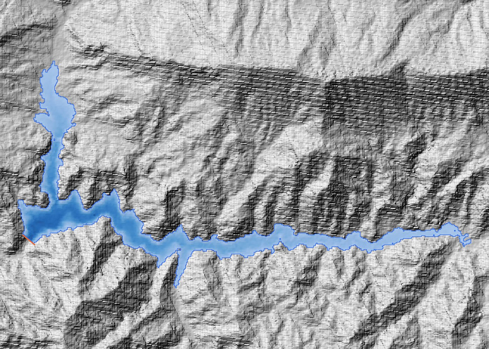
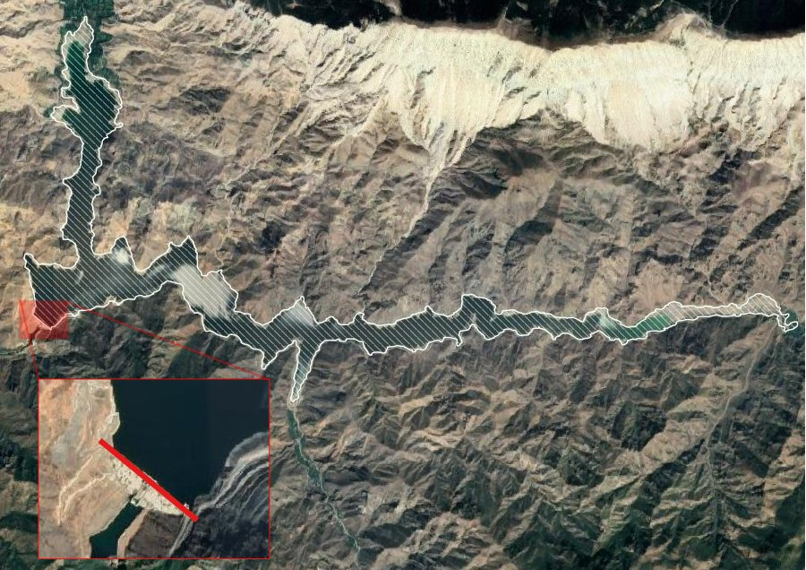

Validation
Does it get the numbers right?
Three independent checks: an exact formula, a satellite image and a large real dam.
1 · Exact solution
For a V-shaped valley z = z0 + s|x| + g·y the volume and area at depth D are known exactly:
V = D³ / (3 g s) A = D² / (g s)
The automated tests require the plugin to match both within 3 % (5 % with a depth limit).
2 · Sample dam against the real lake


3 · Ilısu Dam, Tigris
GEDTM30 downloaded by the plugin; 27.4 m cells, 18 million cells, a lake more than 100 km long. Read from the curve at the normal water level:
| At 525 m a.s.l. | Reservoir Creator | Published | Difference |
|---|---|---|---|
| Surface area | 310.1 km² | 313 km² | −0.9 % |
| Volume | 10 508 hm³ | 10 410 hm³ | +0.9 % |
Speed
First run · Ilısu
129 s
4 window enlargements, 40 tiles downloaded
Later runs
11 s
tiles from the local cache
Mind the DEM. Global 30 m DEMs have errors of a few metres, which matter
for shallow reservoirs. For design work use a local LiDAR or survey DTM made before impoundment.